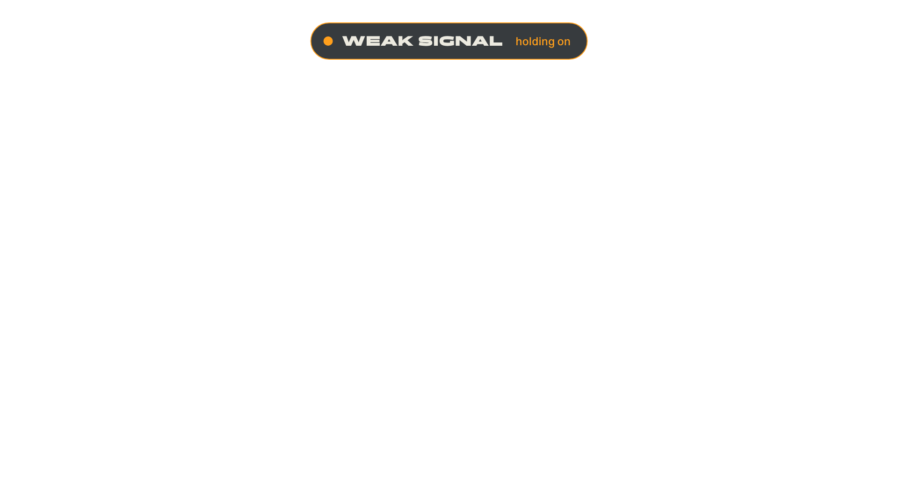

Product
What the streamer and the viewer see.


Viewer sees during a drop

Overlay on weak signal
KEEL / BRAND SHEET / SCREENS FROM THE WORKING PROTOTYPE
Keel is cloud streaming infrastructure for IRL streamers. A keel is the fixed line under a boat that keeps it upright while everything above it is moving. Your phone, your network and your route will wobble. The broadcast should not.
A dropped signal never kills the broadcast. Viewers get a designed BRB, not a dead stream.
The streamer sees signal state and a reliability record, not a wall of settings.
Drops held, longest drop, unexpected stops. Reliability is measured and shown.
The wordmark's L foot extends into a level line: the horizon the stream holds.
Panchang for state words and brand. Switzer for everything else. Both free from Fontshare.
